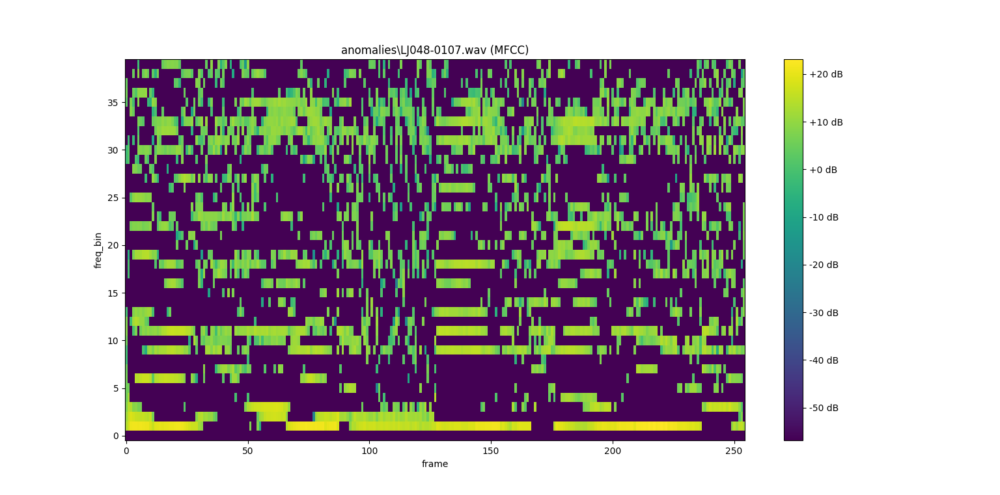
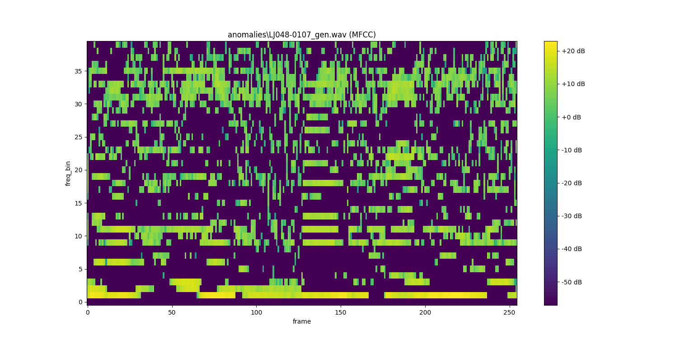
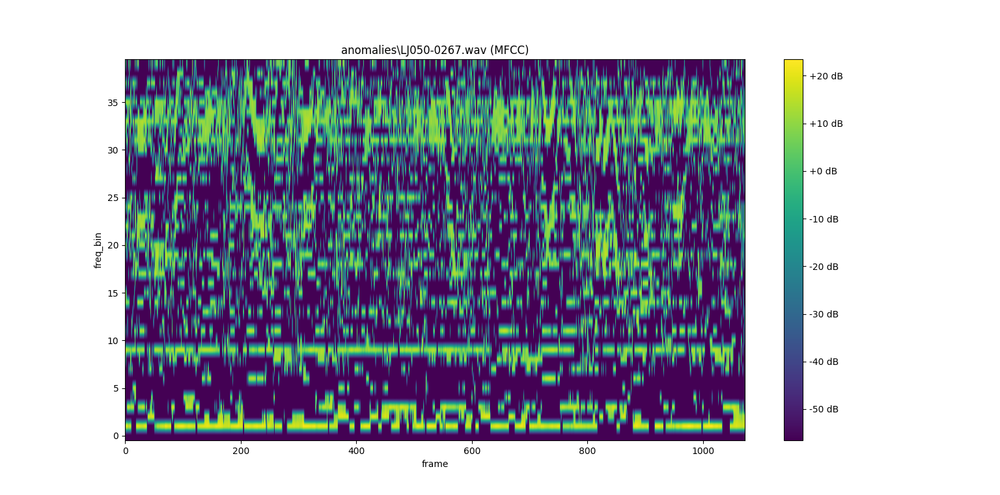
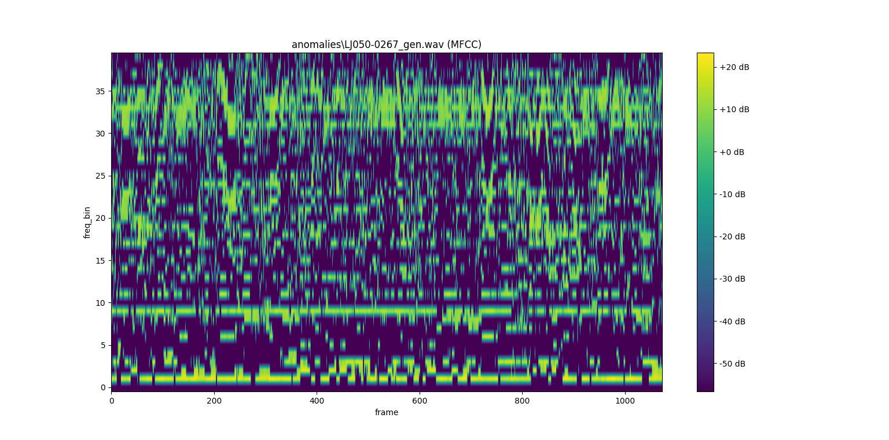
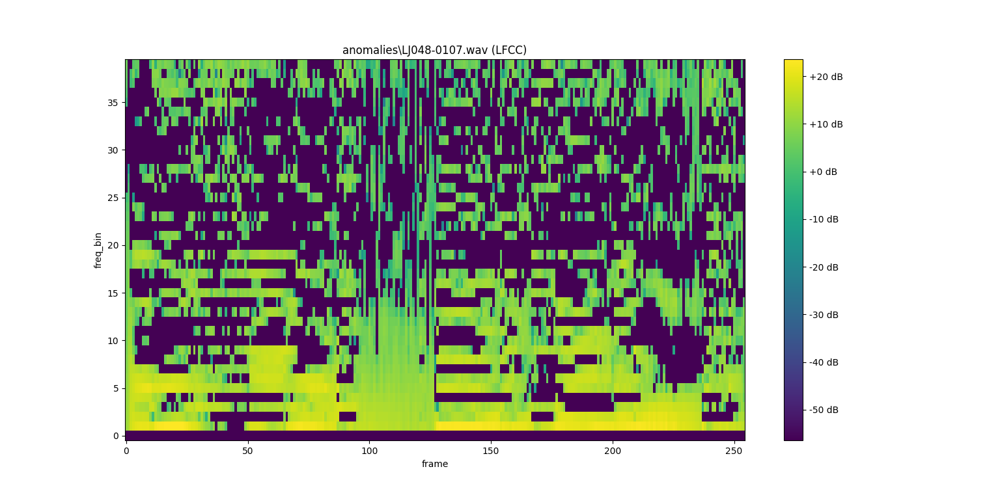
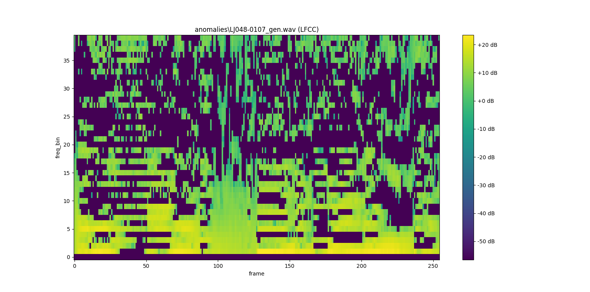
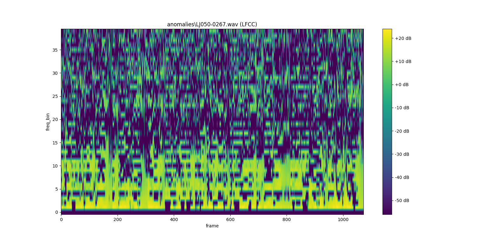
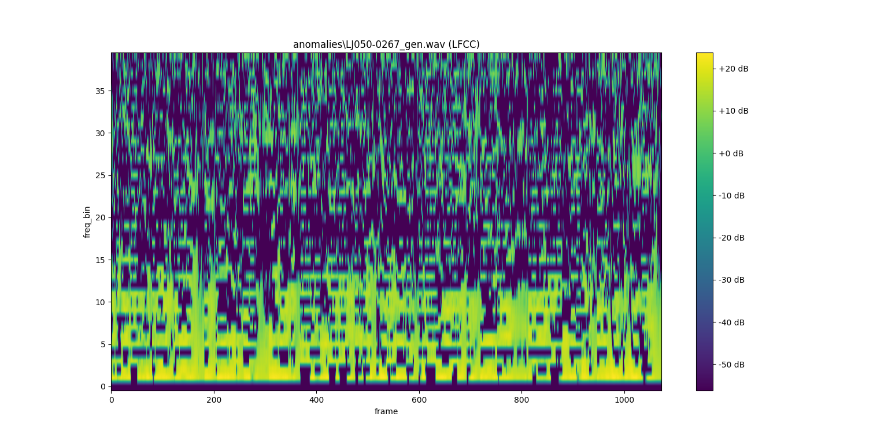

This minimalist GUI serves as a method to explore the results of our Deep Learning group project!
More concretely, you will be able to interact with some of the data and findings to better understand the intuition and implications of our results.
Without further ado, let's explore!
Interesting Results
There are 2 data points that 5 of our classifier models have wrongly predicted. The data point names are:
LJ048-0107
LJ050-0267
The above audio files are the real human voices, obtained from the LJ Speech dataset. Here are the corresponding fake ones generated by MelGAN:
LJ048-0107_gen
LJ050-0267_gen
If you try to listen to the audio files, they are very similar and virtually indistinguishable to the human ear. Let's take a closer look at their MFCC and LFCC features.
MFCC & LFCC Features
Let's take a look at the MFCC features first. You can drag the slider across the images to observe the differences.
LJ048-0107


LJ050-0267


Next, we'll take a look at the LFCC features.
LJ048-0107


LJ050-0267


As you can see, each of the features are quite similar. Hence, the models have a harder time in differentiating them.